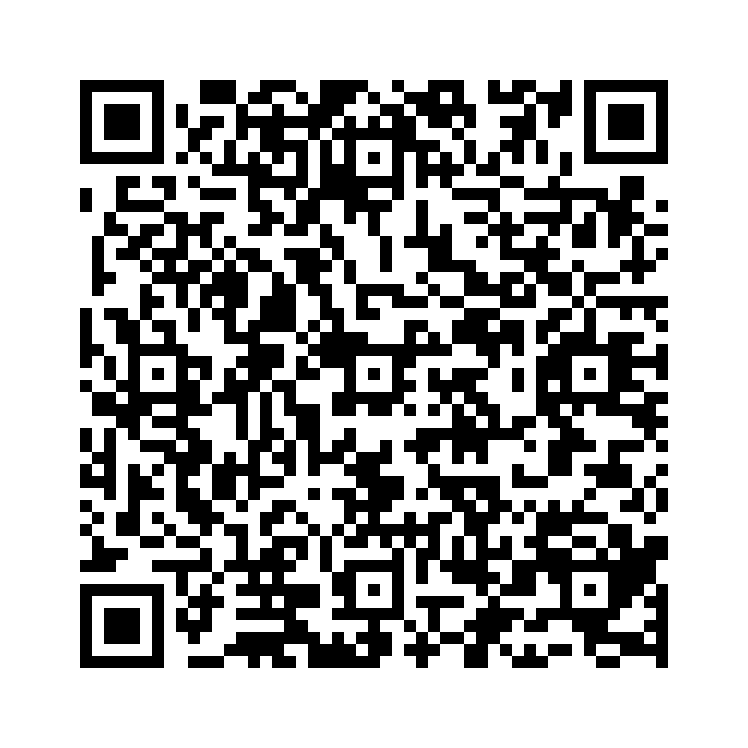

受動態 × 助動詞では、「助動詞 + be + 過去分詞」の形を使います。
例：The homework must be done by 5 p.m.
（宿題は午後5時までに終わらせなければなりません）
短縮形は主に助動詞に関係します。
例：will not → won't、cannot → can't
以下の単語を並び替えて正しい文を作成しましょう。（和訳を参考にしてください）

問題1: (cleaned / this / every / must / be / room / day) - この部屋は毎日掃除されなければなりません。
解答: This room must be cleaned every day。
解説: 「助動詞 + be + 過去分詞」の形で受動態を作ります。
問題2: (done / be / the / by / work / him / will / tomorrow) - その仕事は彼によって明日なされるでしょう。
解答: The work will be done by him tomorrow。
解説: 「助動詞 + be + 過去分詞」の形で受動態を作ります。
問題3: (used / must / not / room / the / be) - その部屋は使ってはいけません。
解答: The room must not be used。
解説: 「助動詞 + be + 過去分詞」の形で受動態を作ります。
問題4: (can / door / opened / be / the/ ?) - ドアは開けられることができますか？
解答: Can the door be opened?
解説: 「助動詞 + be + 過去分詞」の形で受動態を作ります。
問題5: (should / not / the / be / written / him / by / letter) - その手紙は彼によって書かれるべきではありません。
解答: The letter should not be written by him。
解説: 「助動詞 + be + 過去分詞」の形で受動態を作ります。